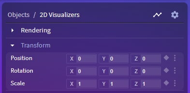

What is a layer?
Layers are objects in Vizzy through which items are rendered to the screen or to a buffer. highlight
Layer types
There are two layer types in Vizzy - 2D and 3D (Orthographic and Perspective), we might also call them camera types. The camera type is automatically selected based on the first item you add to the layer, but you can always change it by clicking the layer.
Orthographic
Layers using the orthographic projection use parallel lines to project an outline to a plane. Effectively, this means that objects within the camera’s clip plane will be the same size
Perspective
Layers using the perspective projection will simulate how the human eye or a camera see perspective, i.e. objects further away will appear smaller

Image credit1
Transform controls
Each layer has something called transform controls.

These controls are none other than the controls for the layer’s camera. You can place the camera and the items in a layer anywhere in the 3D space
Inverted scale
The scale control of the layer is inverted, meaning setting the
xscale to 0.5 will scale the objects to twice their original size along that axis, instead of half.
Effects
All layers can have effects added to them.